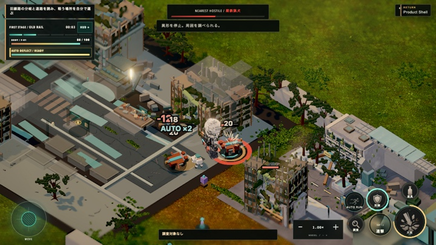

AIとつくる、世界記憶型・放浪ローグライク
F.R.A.M.
F.R.A.M. / FRONTIER RELICS ARCHIVE MODULE / 辺境遺物記録モジュール自然に侵食された旧世界を放浪し、遺物を回収して装備と遠征を組み替える。帰還や選択の結果が次の旅へ残る、世界記憶型の放浪ローグライク。

AIとつくる、世界記憶型・放浪ローグライク
自然に侵食された旧世界を放浪し、遺物を回収して装備と遠征を組み替える。帰還や選択の結果が次の旅へ残る、世界記憶型の放浪ローグライク。
